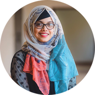

|
Farhat Tasnim Progga
I am a PhD student, working on Social & Ethical Computing under Dr. Sabirat Rubya's supervision at Marquette University. Previously, I was an Associate Software Engineer, QA at Therap (BD) Ltd., Bangladesh which is a wholly owned subsidiary of Therap Services, LLC, Waterbury, CT 06708-2240, USA.
I completed my Bachelor’s in Computer Science and Engineering at North South University also, graduated cum laude. I, along with a team of 4 members have designed and executed a noble approach of detecting domestic violence using Deep Learning Techniques as our final year capstone project, and we were under supervision of AKM Bahalul Haque. During my undergrad period, I was a Teaching Assistant in my university for more than one and a half years. I have completed my internship at Banglalink Digital Communications Ltd., Bangladesh, which is the third largest cellular service provider in Bangladesh. In the meantime, I continued to flourish my research interest towards Artificial Intelligence (AI), Human-Centered Machine Learning, Deep Learning Applications; also, since I am a Software Quality Assurance Engineer I started to take in-depth research upon that too. As an outcome of my enthusiasm towards research two of research papers are under reviewing process at IEEE Conferences. Apart from being technical, I also affiliated myself with IEEE, where I performed the responsibilities of a treasurer of the IEEE North South University Women in Engineering Affinity Group Student Branch advised by Dr. Shohana Rahman Deeba and a secretary of the IEEE North South University Industry Application Student Branch Chapter advised by AKM Bahalul Haque.
Curriculum Vitae /
Email /
LinkedIn /
Google Scholar /
Research Gate
|

|
|
Research Works
My research interest lies in Human-Computer Interaction, Human-Centered Machine Learning, Computer Vision and Deep Learning Applications. During my undergraduate study, I involved myself in some projects on video classification as Deep Learning Applications. Regardless, I am flexible to work on any project in such fields, with my foremost motivation to learn new dimensions and contribute to humanitarian technology. Below portrayed are my research works and projects I have done and have been involved so far.
|
|
|
Child Labour Detection Approach
A noble detection approach was designed, implemented and tested, which has the ability to detect child labour happening in the construction areas of the South Asian countries.
|
|
|
Application of Deep Learning Techniques: Domestic Violence Detection
A method of detecting the occurance of domestic violence by dint of deep learning techniques and giving the victims immediate relief from that situation.
|
|
|
Human Exploration Rover
NASA Human Exploration Rover Challenge 2019, Huntsville, USA
A 4 wheeled human exploration rover was built that can carry 2 drivers of that rover and perform some specific tasks.
|
Associate Software Engineer, QA
Therap (BD) Ltd. (August 2020 - Present)
Responsibilities:
Reviewing quality specifications and technical design documents to provide timely and meaningful feedback;
Creating detailed, comprehensive and well-structured test plans and test cases;
Estimating, prioritizing, planning and coordinating quality testing activities.
|
Teaching Assistant
North South University (January 2019 - June 2020)
Responsibilities: Conducting tutorial sessions for students, grading home-works and assignments, maintaining office hours for student consolation, assisting faculty members in their course related works.
Courses: Pre-Calculus; Calculus and Analytic Geometry-I; Introduction to Linear Alzebra.
|
Service Assurance Intern
Banglalink Digital Communications Ltd. (July 2020 – August 2020)
Responsibilities:
Complied with all lawful and reasonable directions and instructions given by officers or employees of Company
during the course of the Internship;
Learned about the service assurance operation of Banglalink Network.
|
Treasurer
IEEE North South University Women in Engineering Affinity Group Student Branch (January 2018 - January 2020)
Served as the treasurer of the IEEE North South University Women in Engineering Affinity Group Student Branch.
|
Secretary
IEEE North South University Industry Application Student Branch Chapter (June 2018 - June 2019)
Served as the secretary of the IEEE North South University Industry Application Society Student Branch Chapter.
|
|
Organizer
Served as an organizer in IEEE Student Professional Awareness Conference (SPAC) 2018.
|
|
Activities
Debating, Public Speaking, Camping, Volunteerism (IEEE Bangladesh Section, Bangladesh Girls’ Guide
Association).
|
Finalist
NASA Human Exploration Rover Challenge 2019, Huntsville, USA
NASA Human Exploration Rover Challenge is an engineering design challenge to engage students worldwide in the next phase of human space exploration.
|
Finalist
Young Innovation Competition on Global Governance (YICGG) 2019, Indonessia
The Youth Innovation Competition on Global Governance (YICGG) is an annual competition that act as a platform to raise global issues to the youth from all parts of the world.
|
Finalist
IEEE YESIST12-Age of Innovation 2019, Bangkok, Thailand
IEEE YESIST12 is an international talent show for students and young professionals to showcase their innovative ideas to solve humanitarian issues affecting the community around them.
|
Selected Participant
ACM SIGCHI Summer School 2019, North South University, Dhaka, Bangladesh
A summer school is a program of lectures, classes, tutorials, hands on technology sessions, exercise or group work arranged by a group of SIGCHI members for the benefit of SIGCHI student members.
|
Invited Participant
WePower Conference 2019 by World Bank, Kathmandu, Nepal
An international manifesto for celebrating the Women Power specifically the power of women in technical sectors of South Asia.
|
|